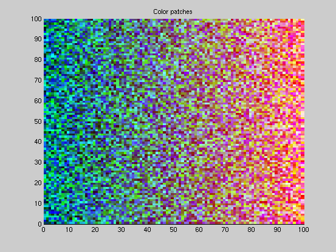

Contents
Testing single colors for a given color name match
fuzzycolor([1 0.1 0.1],'red')
fuzzycolor([1 0.1 0.1],'blue')
ans =
1
ans =
0
Some colors are near the edge
fuzzycolor([1 0.3 0.3],'red')
ans =
0.49
Testing a single color for any match from the color name database
[iscolor,colornames] = fuzzycolor([1 1 .2])
iscolor =
0 0 0 0 0 1 0 0 0 0 0 0 0
colornames =
Columns 1 through 8
'red' 'green' 'blue' 'neutral' 'pastel' 'yellow' 'flesh' 'cyan'
Columns 9 through 13
'magenta' 'black' 'white' 'purple' 'brown'
A set of random color patches
CP = sortrows(rand(10000,3));
figure
displaycolorpatches(CP)
 Which patches were essentially red?
isc = fuzzycolor(CP,'red')>0.5;
figure
displaycolorpatches(CP(isc,:))
Which patches were essentially blue?
isc = fuzzycolor(CP,'blue')>0.5;
figure
displaycolorpatches(CP(isc,:))
Which patches were essentially green?
isc = fuzzycolor(CP,'g')>0.5;
figure
displaycolorpatches(CP(isc,:))
Which patches were essentially a flesh tone?
isc = fuzzycolor(CP,'flesh')>0.5;
figure
displaycolorpatches(CP(isc,:))
An actual jpg image
imrgb = imread('monet_adresse.jpg');
figure
image(imrgb)
Which pixels were green? Turn ALL the other pixels to white.
indg = find(fuzzycolor(double(imrgb)/255,'green')<0.5);
n = size(imrgb,1)*size(imrgb,2);
img = imrgb;
img([indg;indg+n;indg+2*n]) = 255;
figure
image(img)